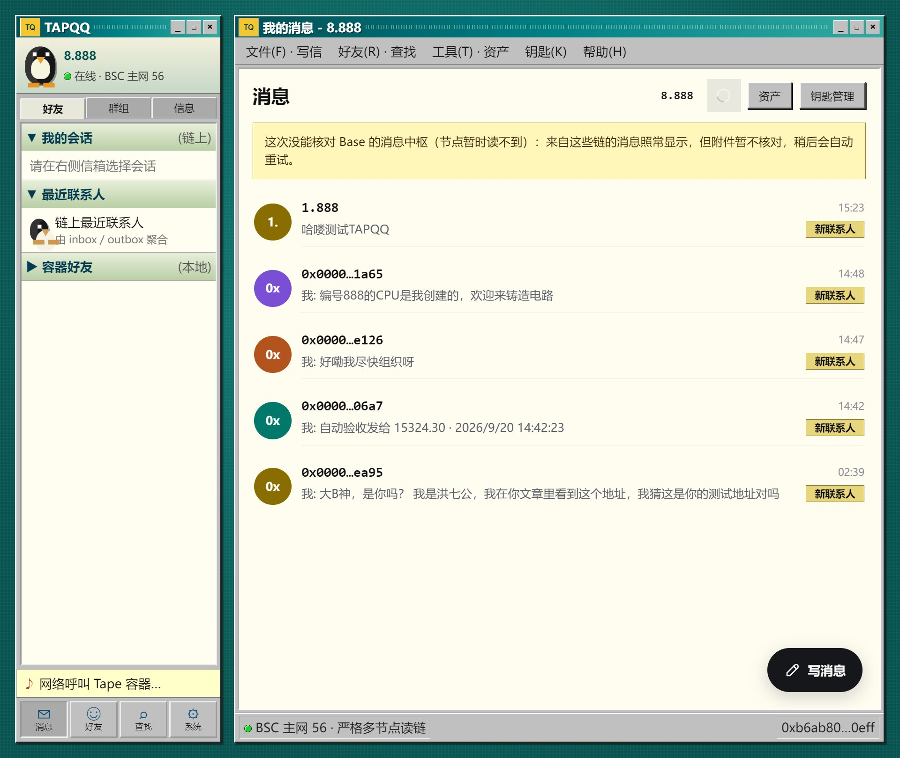

钱包派生密钥
用户用钱包签名派生加密密钥，无需另设聊天密码。
作品 04 / TapeSend
TapeSend 是 DeWEB 的实时加密消息层：每个 TapeOut 电路容器都可以成为消息地址，内容端到端加密，客户端直接从多条公链读取并核验，不依赖跨链桥、中心化索引器或消息服务器。
它与 TapeKit 的分工：TapeKit 负责把链上网站读出来；TapeSend 负责让不同链上的电路容器彼此传递消息。两者共享多链读取与容器身份，但解决的是两类独立问题。
01 / 定位
创始人 Blonskr 于 2026-09-19 公布 TapeSend，将它定义为横跨多条公链的实时加密消息通道，也是 DeWEB 在链上网站之外的第二类基础设施。消息双方不是传统用户名，而是 TapeOut 电路容器：谁持有容器，谁就拥有用该身份发送和接收消息的权利。
02 / 工作流程
用户用钱包签名派生加密密钥，无需另设聊天密码。
正文在发送者设备上端到端加密，链上只写入密文与校验信息。
消息写入发送者所在公链的 DeWEB Hub，不把消息桥接到另一条链。
接收方客户端读取多条链，并按链上摘要核对载荷后显示。
15324.30；X Layer 区号为 2，如 1.2.0。创始人已演示这两个容器之间双向传递消息。03 / 核心能力
消息正文在本地加密，链上保存的是密文；内容密钥不交给中心化服务。
密钥由钱包签名派生；容器转让后，新的持有人接管收信身份，也可以轮换密钥。
消息留在发送者自己的链上，客户端聚合多条链的数据，避开桥接资产与桥被攻击的风险。
客户端通过链上收件箱、发件箱和事件读取消息，不把中心化数据库放在消息路径中。
消息上链后，接收方轮询对应链即可发现；实际速度取决于链确认与节点响应。
小附件可放入加密载荷；资产附件通过转入接收者容器的链上交易单独核验。
04 / 客户端与开源
TapeSend 代码位于 TapeKit 开源仓库中，采用 MIT 协议。仓库同时提供消息合约、@tapekit/send 协议模块和基本达到商业化形态的 TapeSend 客户端。
| 组成 | 作用 |
|---|---|
send/contracts | DeWEB Hub、代理与部署测试，负责链上收件箱、发件箱和消息事件。 |
send/module | 密钥派生、加解密、端点地址、多节点严格读链与附件验证。 |
apps/tapesend | Web、Mac/桌面（Electron）以及 iOS、Android（Capacitor）客户端。 |
04A / 第三方应用
TapeSend 公开后不到 24 小时，社区已展示三种不同的即时通信外壳。它们共享电路容器身份与 TapeSend 消息层，但当前公开证据的成熟度并不相同：以下只记录作者原帖和截图能够直接确认的能力。
社区开发者洪七公（@CryptoLoser9）在 2026-09-19 公开 TAPQQ，并在 9 月 20 日完成发布、开放用户试发消息。界面把电路容器身份、钱包签名与 DeWEB 消息通道包装成早期 QQ 风格的即时通信体验。
新截图显示 TAPQQ 已能读取 BSC 主网的 inbox / outbox，聚合链上最近联系人并展示会话。界面同时保留严格多节点读链状态；当 Base 节点暂时不可读时，会继续显示来自该链的消息，但暂停附件核验并自动重试。
1-888.tapekit.org 已能打开 TAPQQ 登录页并提供钱包连接入口。作者把首版范围收敛为互相发送消息，附件和资产能力留待后续更新，同时明确提醒早期版本仍可能存在较多 bug。

8.888、链上最近联系人与 inbox / outbox 聚合。@0xkEvinC 展示的 DeQQ 截图明确标注“TapeSend 多链消息”和端到端加密，并提供连接钱包、查找/添加好友、收件箱、已发送与身份入口；界面列出 BNB、X Layer、Base。原帖只称“写了一个 tape 版 QQ 玩玩”，因此这些应视为已展示的界面与交互入口，不能据此断言全部功能已通过主网测试。
@Xiao_zhanyang 展示 TapeChat 在币安 App 内置浏览器中运行：可选择容器身份、查看会话、写消息，并显示带 BNB Smart Chain 区块号的消息与引用回复。它证明 TapeSend 客户端可以进入交易所 App 的 DApp 浏览环境；作者同时说明产品仍在继续优化。
核验说明：集合文章称 TAPQQ 的附件传输已经跑通，但 TAPQQ 作者最新说明是“这次先搞定互相发消息，附件和资产以后再更新”。本页以后者为准，不把附件列为 1.0 已实现能力。
查看 TAPQQ 最初开发进度 → · 查看 TAPQQ 发布说明 → · 打开 TAPQQ 链上地址 → · 查看三款客户端集合说明 →
05 / 安全边界
消息正文加密，但谁给谁发信、时间、消息长度等元数据可被链上观察者看到。
消息写入发送者所在链，因此需要该链的 gas；“无需 gas”只适用于访问 DeWEB 网站，不适用于发送链上消息。
06 / 里程碑
创始人宣布 TapeSend 完全开源：处理器工厂、电路容器、网站仓库与消息中枢已部署到 X Layer，并演示 X Layer 容器 1.2.0 与 BNB Chain 容器 15324.30 双向传递端到端加密消息。